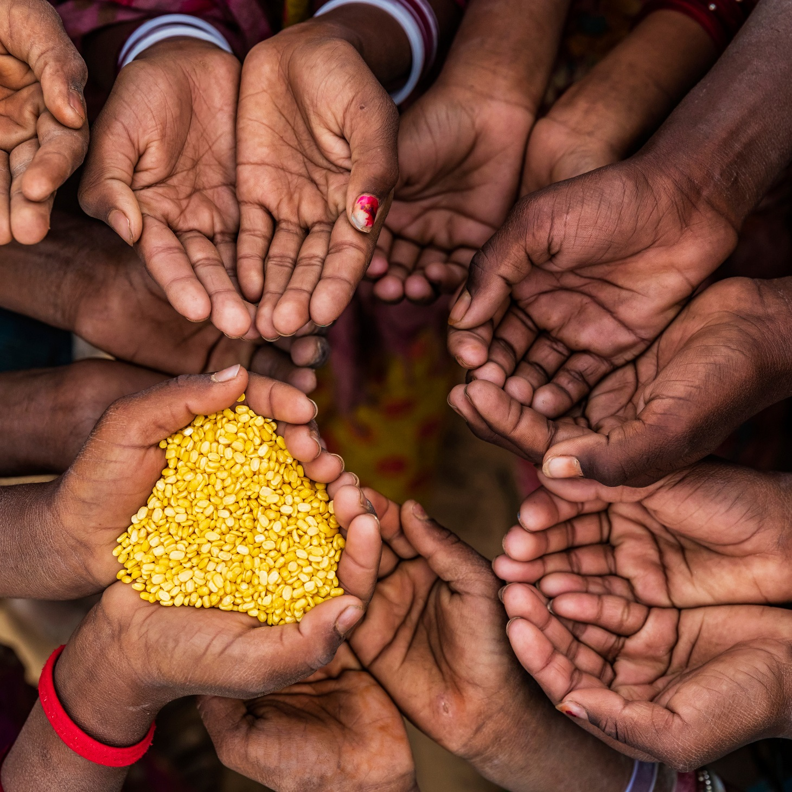

Seja Consciente
- Faça a diferença na vida de outras pessoas. A forma como nos
alimentamos tem um impacto profundo não apenas em nossa saúde, mas também na sociedade ao nosso redor. Ao
adotar escolhas alimentares conscientes, podemos contribuir para um mundo mais justo e solidário.
- A consciência alimentar envolve uma série de aspectos, desde a escolha de alimentos saudáveis e
sustentáveis até a redução do desperdício. Ao optar por alimentos frescos, naturais e nutritivos, não
apenas estamos cuidando de nossa própria saúde, mas também apoiando agricultores locais e promovendo
práticas agrícolas sustentáveis.
- Além disso, ajudar o próximo por meio da alimentação é uma maneira poderosa de demonstrar empatia e
solidariedade. Existem diversas formas de contribuir: doar alimentos a instituições de caridade,
participar de projetos de alimentação comunitária ou até mesmo compartilhar uma refeição com alguém que
precisa. Pequenos gestos podem ter um impacto significativo na vida daqueles que enfrentam dificuldades.
- Lembre-se de que cada escolha alimentar que fazemos é uma oportunidade de fazer o bem. Ao estarmos
conscientes do impacto de nossas ações, podemos promover mudanças positivas em nossa própria vida e na
vida de outros. Cultivar essa consciência alimentar é um convite para uma jornada de transformação pessoal
e social. Vamos nutrir nosso corpo, nossa comunidade e nosso planeta com bondade e compaixão através da
comida.